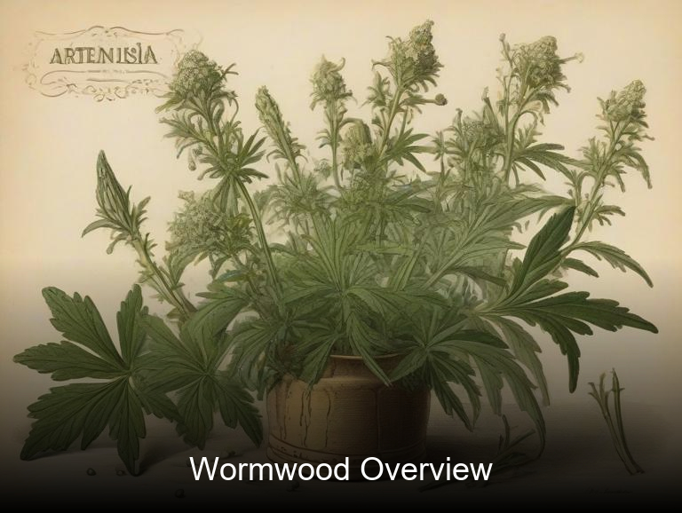
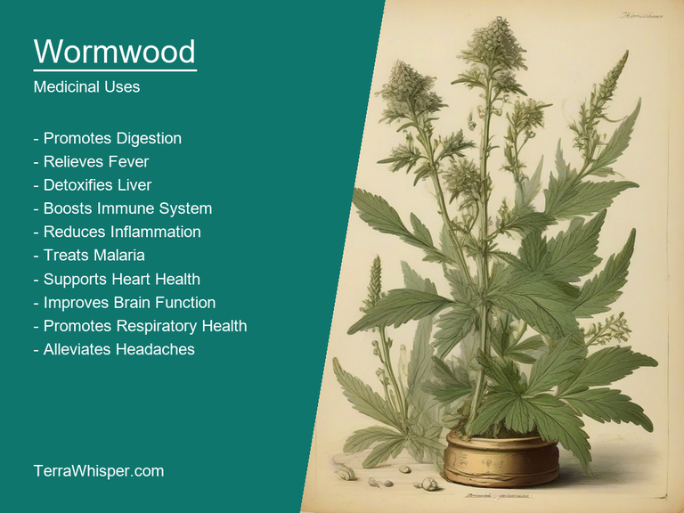
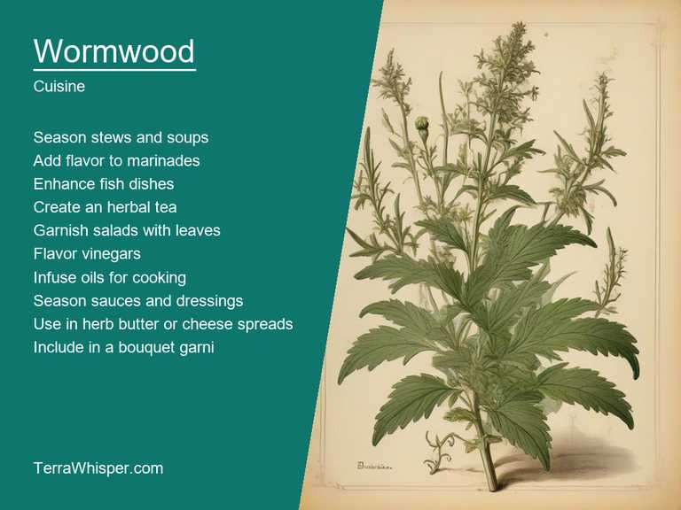
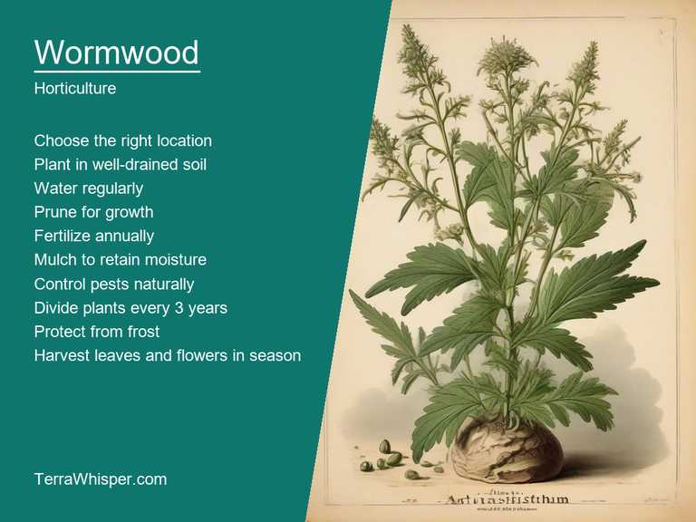
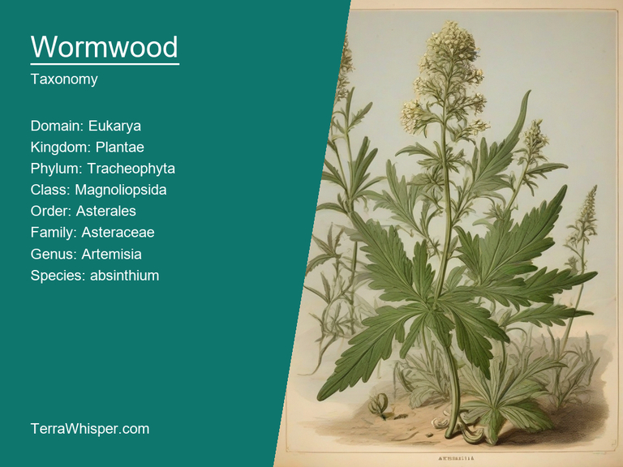
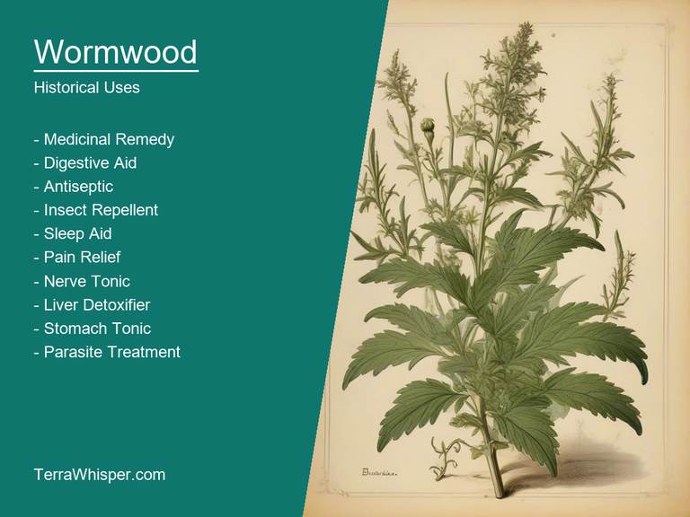

Wormwood, scientifically known as Artemisia absinthium, is a perennial herb that has been used for its medicinal and culinary properties for centuries. Native to Europe, North Africa, and Asia, this plant can grow up to 120 cm tall and has small yellow flowers on the top of its branches. It also produces an essential oil, known as absinthium oil, which is used in aromatherapy and herbal medicine.
In traditional medicine, wormwood has been used to treat various ailments such as digestive issues, fever, and parasitic infections. Its bitter taste has also made it a popular ingredient in tonics and bitters, often used to stimulate the appetite. Furthermore, the dried leaves can be steeped in boiling water to make tea for relief from indigestion or flatulence.
As an ornamental plant, wormwood is valued for its attractive foliage, which has a silver-gray color due to fine hair coverings. It thrives in well-drained soil and full sun conditions. The plant's aromatic qualities make it suitable as a companion plant in gardens, repelling pests like aphids while attracting beneficial insects like ladybugs.
Botanically speaking, Artemisia absinthium belongs to the Asteraceae family, which includes daisies and sunflowers. The genus name "Artemisia" honors Artemis, the Greek goddess of wilderness and hunting, while the species name "absinthium" refers to its historical use in the production of absinthe liquor. In ancient times, it was believed that absinthe had psychoactive properties; however, modern research has debunked these claims.
Wormwood's botanical and historical significance extends beyond its medicinal uses. It plays a role in various mythologies and cultural traditions across Europe, particularly during the Middle Ages when it was used as an ingredient in love potions. In modern times, wormwood remains a popular subject for herbalists and gardeners alike due to its versatility and hardy nature.
In this article, you will discover what are the medicinal and culinary uses of wormwood. Then, you'll learn how to cultivate it, what is its botanical profile, and how it was used historically.
Wormwood (Artemisia absinthium) has many health benefits, including its traditional use in the treatment of digestive issues and various types of intestinal worms. It is also known for its ability to help relieve nausea and improve appetite. Additionally, it can be applied as an astringent agent, which helps to tighten body tissues and reduce inflammation. Moreover, Wormwood has been widely recognized in traditional medicine systems around the world due to its antifungal, antibacterial, antiseptic, and anti-inflammatory properties.
The following illustration lists the most important uses of wormwood in medicine.

The primary medicinal constituents of Wormwood (Artemisia absinthium) include a variety of volatile oils such as thujone, camphor, anethole, and terebinthine. These compounds contribute to the plant's therapeutic effects on various health conditions. Additionally, the herb contains flavonoids, coumarins, and other phytochemicals that further enhance its medicinal properties.
The most commonly used parts of Wormwood (Artemisia absinthium) are the leaves, flowers, and stems. These plant parts are typically harvested when they are fresh and in their peak growing season to ensure maximum potency. To prepare Wormwood for medicinal purposes, it can be consumed as a tea or tincture by infusing its parts into hot water or an alcohol solution respectively. It may also be used topically as an ointment or salve, or incorporated into baths and steam inhalations.
Although Wormwood (Artemisia absinthium) is generally safe for most people when consumed at moderate doses, there are some potential side effects to consider. For instance, excessive intake may lead to poisoning as thujone can be toxic in high amounts. Other adverse reactions include headaches, dizziness, nausea, vomiting, and even seizures. Additionally, those with a history of certain gastrointestinal conditions or liver diseases should avoid using Wormwood due to its potential to exacerbate these issues.
To minimize the risks associated with Wormwood (Artemisia absinthium) consumption, it is crucial to follow recommended dosages and consult a healthcare professional before starting any new herbal treatments or combinations with other medications. It's essential to note that pregnant women should not use this herb due to its potential harmful effects on the developing fetus. Lastly, it is important to purchase Wormwood from reputable sources to ensure its quality and safety for consumption.
Wormwood is used as an herb in traditional cuisines, particularly in Mediterranean and Middle Eastern dishes. Its strong, bitter taste makes it a popular addition to sauces, soups, stews, and even salads. Moreover, its essential oils can be used to flavor vinegars or infused into oils for culinary purposes. It is an essential ingredient in the making of absinthe, a potent liquor that has been enjoyed for centuries, especially by artists and writers.
The following illustration lists the most common uses of wormwood for culinary purposes.

Wormwood's flavor profile is dominated by a sharp bitterness with hints of aniseed, making it quite distinctive. Its aroma resembles that of fresh pine needles. It pairs well with other strong flavors such as garlic, onion, and mustard. When used sparingly, wormwood can elevate the taste of dishes by adding complexity without overpowering them.
The edible parts of the wormwood plant are mainly the leaves and flowers. These parts should be harvested when they are young and fresh to ensure optimal flavor and potency. They can be dried for later use or used fresh in cooking. The seeds may also be eaten, but they have a stronger flavor than the leaves and flowers.
When using wormwood in cooking, start with small amounts as its strong flavor is easily overpowering if used excessively. It's best to add it towards the end of the cooking process so that its volatile oils don't evaporate. A common mistake when using wormwood is to assume that more is better. This isn't true; use this herb judiciously for maximum effect.
While wormwood has been used safely in culinary contexts, it's important to be aware of its potential side effects and toxicity. Ingestion of large amounts can lead to digestive issues such as nausea, vomiting, and diarrhea. It should also not be consumed by pregnant women or those with liver problems.
Artemisia absinthium, commonly known as wormwood, is a hardy perennial herb that can be grown in gardens. It thrives in well-drained soil with a pH between 6 and 7. Wormwood typically prefers full sun but can tolerate partial shade.
The following illustration lists the most important tips to cutlitvate wormwood.

For best results, sow seeds directly into the garden after all danger of frost has passed. The ideal planting depth for wormwood is approximately 1 cm deep, spaced about 45-60 cm apart. Germination takes around two weeks to ten days at temperatures between 20°C and 25°C (68°F - 77°F).
Maintenance of this plant involves regular watering during dry periods but avoid overwatering as it may cause root rot. Prune back the stems after flowering to encourage bushier growth and remove any dead leaves or debris from around the base of the plant. In colder climates, protect your wormwood with a thick layer of mulch in autumn to insulate roots through winter months.
Wormwood, with botanical name Artemisia absinthium, belongs to the domain Eukarya, kingdom Plantae, phylum Tracheophyta, class Magnoliopsida, order Apiales, family Asteraceae, genus Artemisia, species absinthium. The plant also has several common names such as wormwood, green ginger, and old man.
The following illustration display the botanical profile of wormwood.

The Wormwood is a perennial herbaceous plant that grows up to 1-2 meters in height. It has an erect stem with numerous branches and leaves that are covered with short white hairs. The leaves are pinnately compound, with each leaflet being about 1-3 cm long and 0.5-1 cm wide. The flowers are small, yellow or greenish-yellow, arranged in flat-topped or dome-shaped clusters called capitula.
There are several variants of Wormwood, including Artemisia absinthium var. pontica and Artemisia absinthium var. absinthium. The main difference between these two is their geographic distribution. Var. pontica is found in Eastern Europe, Western Asia, and the Caucasus region, while var. absinthium is more commonly found throughout Europe.
Wormwood can be found growing wildly in various habitats across its native range. It prefers well-drained soils and can tolerate a wide range of soil types from sandy to clayey. It thrives in full sun or partial shade, and it is often found in disturbed sites such as roadsides, fields, and waste areas.
The life cycle of Wormwood begins with the production of seeds which are dispersed by wind or animals. These seeds germinate when conditions are favorable, typically during spring or early summer. The plants then grow throughout the growing season, producing flowers in late summer or early fall. After pollination, the flowers develop into seed heads that contain the new generation of seeds.
'wyrm', meaning serpent or worm and '-wudu,' related to bitter substances often derived either directly, like the case with Artemisia absinthium (the common name for Wormwood), which has an intensely biting flavor that comes from its chemical compound thujone; however it also contains antiseptic properties. The term 'Wyrm' was later adopted by Middle English and eventually transformed into modern usage in our language as "wyrme" or simply, the more commonly used name
The following illustration lists the most well known historical uses of wormwood.

Wormwood holds an abundance of cultural significance in various societies worldwide and its use has been noted from ancient times till nowadays for medical applications, religious ceremonies where it often features prominently as a symbolic representation associated mainly during Holy communion rituals or even just to enhance the flavor profile when cooking meals; this plant also made great medicinal importance within some tribes such Chinese culture.
Wormwood has had an integral role in numerous myths and legends across different cultures, reflecting upon both positive aspects as well negative ones too - a notable example coming from Greco-Roman traditions where the Goddess Artemis (who is also known to have played significant roles concerning health) was said associated with this plant; it's claimed she used its healing properties for her own remedies which in turn earned wormwood an esteemed status among many believers.
Wormwood has been prominently featured throughout several prominent pieces of literature spanning centuries, such as Dante Alighieri ' The Divine Comedy' where it appears alongside other poisonous or vicious creatures found within its description by Florentines in Canto III; Shakespeare also referenced this plant symbolically too.
Lastly but not least important aspect about wormwood lies on folkloristic uses, ranging from folk medicine practices to superstitions and even charms - being incorporated into rituals for magical enhancement (for instance some used it as a protection talisman) or sometimes also linked with negative connotations of ill fortune if consumed accidentally during pregnancy; this demonstrates an integral part played by wormwood in influencing humanity's belief systems across different societies.